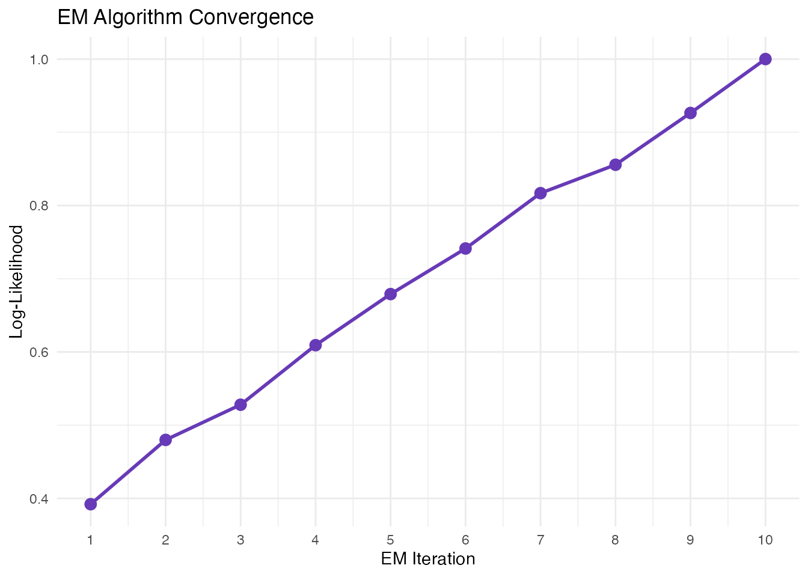

Mathematical Framework of RNA Velocity
Zaoqu Liu
2026-01-26
Source:vignettes/algorithm-theory.Rmd
algorithm-theory.RmdIntroduction
This vignette provides a comprehensive overview of the mathematical framework underlying RNA velocity analysis as implemented in scVeloR. Understanding these principles is essential for proper interpretation of velocity results and for making informed decisions about model selection.
The Central Dogma and mRNA Kinetics
Biological Background
Gene expression involves a series of biochemical processes:
- Transcription: DNA → pre-mRNA (nascent/unspliced)
- Splicing: pre-mRNA → mature mRNA (spliced)
- Degradation: mRNA → degraded products
RNA velocity leverages the distinction between unspliced (nascent) and spliced (mature) mRNA to infer the direction and rate of gene expression changes.
Analytical Solutions
Velocity Estimation Models
Model 1: Deterministic (Steady-State)
Assumption: Cells are near transcriptional steady state.
At steady state:
Velocity: The deviation from steady state indicates the direction of change:
If : gene is being upregulated If : gene is being downregulated
Implementation in scVeloR:
# Fit gamma by linear regression of u vs s
# v_s = β·u - γ·s = β(u - γ/β·s)
# Use regression: u ~ s to get slope γ/βModel 2: Stochastic
Assumption: Account for transcriptional noise through second-order moments.
The stochastic model uses both first moments (mean expression) and second moments (variance, covariance):
This provides more robust velocity estimates when transcriptional bursting is present.
Model 3: Dynamical
Assumption: Full kinetics model without steady-state assumption.
The dynamical model infers all kinetic parameters (, , ) and the switching time () using an Expectation-Maximization (EM) algorithm.
E-step: Assign latent time to each cell M-step: Update kinetic parameters

EM algorithm iteratively refines parameter estimates and time assignments.
Velocity Graph Construction
Latent Time Inference
Model Selection Guidelines
| Criterion | Steady-State | Stochastic | Dynamical |
|---|---|---|---|
| Speed | Fast | Medium | Slow |
| Data requirement | Low | Medium | High |
| Transcriptional dynamics | Equilibrium | Bursting | Transient |
| Parameter inference | γ only | γ only | α, β, γ, t_ |
| Recommended use | Exploration | Default | Publication |
References
Bergen, V., Lange, M., Peidli, S., Wolf, F. A., & Theis, F. J. (2020). Generalizing RNA velocity to transient cell states through dynamical modeling. Nature Biotechnology, 38, 1408–1414.
La Manno, G., Soldatov, R., Zeisel, A., et al. (2018). RNA velocity of single cells. Nature, 560, 494–498.
Svensson, V., & Pachter, L. (2018). RNA velocity: Molecular kinetics from single-cell RNA-seq. Molecular Cell, 72, 7–9.
Session Information
sessionInfo()
#> R version 4.4.0 (2024-04-24)
#> Platform: aarch64-apple-darwin20
#> Running under: macOS 15.6.1
#>
#> Matrix products: default
#> BLAS: /Library/Frameworks/R.framework/Versions/4.4-arm64/Resources/lib/libRblas.0.dylib
#> LAPACK: /Library/Frameworks/R.framework/Versions/4.4-arm64/Resources/lib/libRlapack.dylib; LAPACK version 3.12.0
#>
#> locale:
#> [1] C
#>
#> time zone: Asia/Shanghai
#> tzcode source: internal
#>
#> attached base packages:
#> [1] stats graphics grDevices utils datasets methods base
#>
#> other attached packages:
#> [1] ggplot2_4.0.1
#>
#> loaded via a namespace (and not attached):
#> [1] gtable_0.3.6 jsonlite_2.0.0 dplyr_1.1.4 compiler_4.4.0
#> [5] tidyselect_1.2.1 dichromat_2.0-0.1 jquerylib_0.1.4 systemfonts_1.3.1
#> [9] scales_1.4.0 textshaping_1.0.4 yaml_2.3.12 fastmap_1.2.0
#> [13] R6_2.6.1 labeling_0.4.3 generics_0.1.4 knitr_1.51
#> [17] htmlwidgets_1.6.4 tibble_3.3.1 desc_1.4.3 bslib_0.9.0
#> [21] pillar_1.11.1 RColorBrewer_1.1-3 rlang_1.1.7 cachem_1.1.0
#> [25] xfun_0.56 fs_1.6.6 sass_0.4.10 S7_0.2.1
#> [29] otel_0.2.0 cli_3.6.5 pkgdown_2.1.3 withr_3.0.2
#> [33] magrittr_2.0.4 digest_0.6.39 grid_4.4.0 lifecycle_1.0.5
#> [37] vctrs_0.7.1 evaluate_1.0.5 glue_1.8.0 farver_2.1.2
#> [41] ragg_1.5.0 rmarkdown_2.30 tools_4.4.0 pkgconfig_2.0.3
#> [45] htmltools_0.5.9